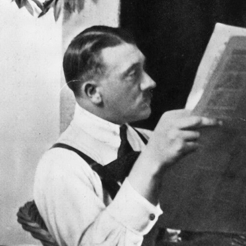
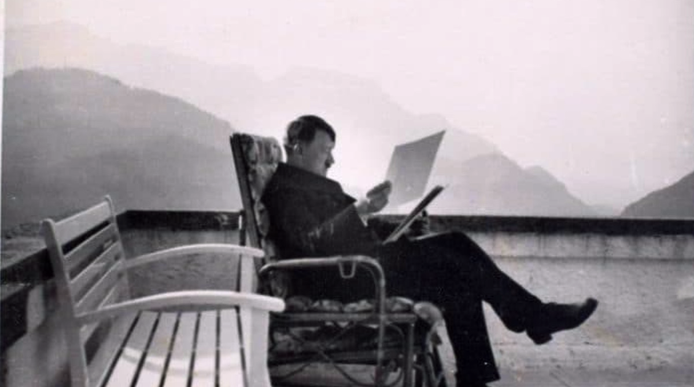

La lectura - Adolf Hitler

Bajo el concepto de lectura, concibo cosas muy diferentes de lo que piensa la gran mayoría de los llamados intelectuales.
Conozco individuos que leen muchísimo, libro tras libro y letra por letra, y sin embargo no pueden ser tildados de lectores. Poseen una multitud de conocimientos, pero su cerebro no consigue ejecutar una distribución y un registro del material adquirido.
Les falta el arte de separar, en el libro, lo que es de valor y lo que es inútil, conservar para siempre en la memoria lo que en verdad interesa, pudiendo saltarse y desechar lo que no les comporta ventaja alguna, para no retener lo inútil y sin objeto. La lectura no debe entenderse como un fin en sí misma, sino como medio para alcanzar un objetivo. En primer lugar, la lectura debe auxiliar la formación del espíritu, despertar las inclinaciones intelectuales y las vocaciones de cada cual. Enseguida, debe proveer el instrumento, el material de que cada uno tiene necesidad en su profesión, tanto para simple seguridad del pan como para la satisfacción de los más elevados designios. En segundo lugar, debe proporcionar una idea de conjunto del mundo. En ambos casos, es necesario que el contenido de cualquier lectura no sea aprendido de memoria de un conjunto de libros, sino que sea como pequeños mosaicos en un cuadro más amplio, cada uno en su lugar, en la posición que les corresponde, ayudando de esta forma a esquematizarlo en el cerebro del lector. De otra forma, resulta un bric-à-brac, de materias memorizadas, enteramente inútiles, que transforman a su poseedor en un presuntuoso, seriamente convencido de ser un hombre instruido, de entender algo de la vida, de poseer cultura, cuando la verdad es que con cada aumento de esa clase de conocimientos, más se aparta del mundo, hasta que termina en un sanatorio o como político en un parlamento.
Nunca un cerebro con esta formación conseguirá retirar lo que es apropiado para las exigencias de determinado momento, pues su lastre espiritual está encadenado no al orden natural de la vida, sino al orden de sucesión de los libros, como los leyó y por la manera que amontonó los asuntos en su mente. Cuando las exigencias de la vida diaria le reclaman el uso práctico de lo que en otro tiempo aprendió, entonces mencionará los libros y el número de las páginas y, pobre infeliz, nunca encontrará exactamente lo que busca.
En las horas críticas, esos sabios, cuando se ven en la dolorosa contingencia de encontrar casos análogos para aplicar a las circunstancias de la vida, sólo descubren remedios falsos.

Quien posee, por esto, el arte de la buena lectura, al leer cualquier libro, revista o folleto, concentrará su atención en todo lo que, a su modo de ver, merecerá ser conservado durante mucho tiempo, bien porque sea útil, bien porque sea de valor para la cultura general.
Lo que se aprende por este medio encuentra su racional ligazón en el cuadro siempre existente de la representación de las cosas, y, corrigiendo o reparando, aplicará con justeza la claridad del juicio. Si cualquier problema de la vida se presenta a examen, la memoria, por este arte de leer, podrá recurrir al modelo de percepción ya existente.
Así, todas las contribuciones reunidas durante decenas de años y que dicen algo sobre ese problema son sometidas a una prueba racional en nuestra mente, hasta que la cuestión sea aclarada o contestada.

Sólo así la lectura tiene sentido y finalidad.
Un lector, por ejemplo, que por ese medio no provea a su razón los materiales necesarios, nunca estará en situación de defender sus puntos de vista en una controversia, aunque correspondan los mismos mil veces a la verdad. En cada discusión la memoria le abandonará desdeñosamente. No encontrará razonamientos ni para la firmeza de sus aseveraciones, ni para la refutación de las ideas del adversario. En cuanto esto sucede, como en el caso de un orador, el ridículo de la propia persona todavía se puede tolerar; de pésimas consecuencias es, sin embargo, que esos individuos que saben todo y no son capaces de nada, sean colocados al frente de un Estado.
Muy pronto me esforcé por leer con método y fui, de manera feliz, auxiliado por la memoria y por la razón. Observadas las cosas bajo ese aspecto, me fue fecundo y provechoso sobre todo el tiempo que pasé en Viena. La experiencia de la vida diaria me servía de estímulo, siempre para nuevos estudios de los más diversos problemas. Cuando, por fin, estuve en situación de poder fundamentar la realidad en teoría, y sacar la prueba de la teoría en la práctica, estuve en condiciones de evitar el exceso de apego a la teoría, o descender demasiado en la realidad. De esta forma la experiencia de la vida diaria en ese tiempo, en dos de los más importantes problemas, aparte del social, se volvió definitiva y me sirvió de estímulo para el sólido estudio teórico.
A. H. Mein Kampf. The Stalag Edition. (pp.47-50).